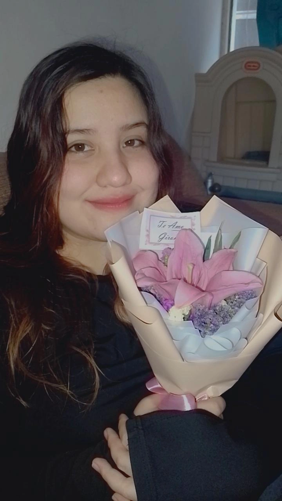

Una de nuestras primeras fotos!
11 de Julio, 2025
La primera vez que nos vimos... Cómo pasa el tiempo.
Quién diría que te convertirías en el amor de mi vida.
TE AMO ♥
La primera vez que caminamos agarrados de la mano.
11 de Julio, 2025
Caminar agarrados de la mano se siente como si estuviera caminando hacia el cielo, se siente tan bonito estar a tu lado que tan solo estando agarrados de la mano ya siento que nos unimos.
Primera vez en casa de Giromy
17 de Julio, 2025
La primera vez que nos vimos... Cómo pasa el tiempo.
Quién diría que te convertirías en el amor de mi vida.
TE AMO ♥

Besitos en casa de Giromy
17 de Julio, 2025
Cada vez que me besas, cada vez que me abrazas, me siento en paz.
TE AMO ♥
Fabián loquillo
26 de Julio, 2025
Qué hermosa te ves, Giromy. ♥
Cenita juntos
9 de Agosto, 2025
Cuando no iba a la mesa junto a tu familia jajajaj
Flores para mi amada!
11 de Agosto, 2025
Ese día que te sorprendí con las flores que hasta lloraste de la emoción... Te amo mucho mi amor.
Primer mes de novios
18 de Agosto, 2025
Cumplimos un mes, y cada día que pasa te amo más.
Besitos en casa de Giromy de nuevo
23 de Agosto, 2025
Cada vez que nos vemos me pone muy feliz, te amo.

Flores para mi amada! 2.0
25 de Agosto, 2025
Me pone feliz verte feliz.
ENAMORADOS
25 de Agosto, 2025
Qué lindos se nos ve así.
Dos personas muy guapas
3 de Septiembre, 2025
Giromy, eres muy hermosa, te amo.
Hulk saludando y momento cute
3 de Septiembre, 2025
Cuándo no ese Hulk loquillo.
Nunca olvides, 10 veces significa "Te amo".

Giromy, hermosa
3 de Septiembre, 2025
Giromy es la chica más hermosa del mundo, y no lo digo siendo sarcástico, de verdad que para mí es la chica más linda de todo el mundo, la única que se roba mi mirada, la única a la que amo.
Fabi mimido
5 de Septiembre, 2025
Me da sueño porque me generas paz.
Momento familiar
5 de Septiembre, 2025
Cuando ya estaba entrando más en confianza con tu familia e iba a la mesa con ustedes jeje.

Giromy con Homero
6 de Septiembre, 2025
Aquí no hay mucho qué comentar, Giromy ni saluda a Homero.

Día de cine con la familia
10 de Septiembre, 2025
Este día me gustó mucho, me divertí bastante contigo y con tu familia.
Me voy dando cuenta que cada día que pasa te amo más que el anterior y menos que el siguiente.
Dos tortolitos
13 de Septiembre, 2025
Así saldrán nuestros hijos. Te amo.

Cumpleaños de Fabián!
17 de Septiembre, 2025
La única foto que nos tomamos.
Este día la pasé súper bien, y todo gracias a ti, Giromy.
Haces que me sienta muy bien estando contigo, gracias por amarme, te amo con toda mi alma.
TE AMO ♥
Dos tortolitos
13 de Septiembre, 2025
Así saldrán nuestros hijos. Te amo.